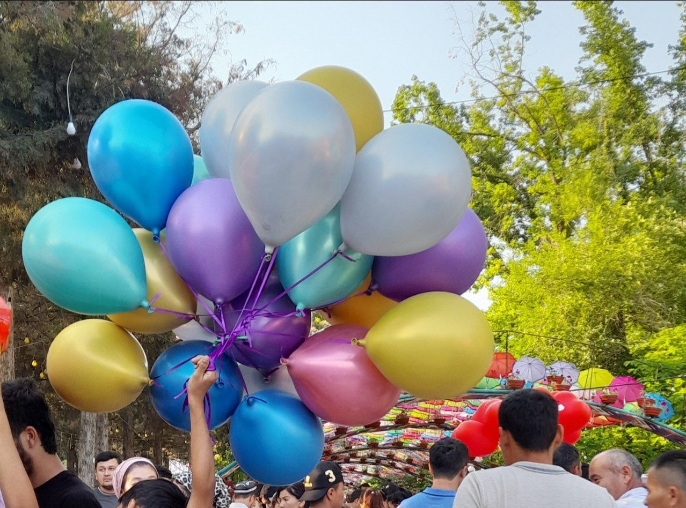

BASE · SYNTHESIS
0.884Synthesis baseline
procedural synthesis only
構造補正risk0.116
Fatigue0.124
Chaos0.146
Low-end0.413
Long-form0.000
Section novelty0.193
3 sections-21.5 LUFS-4.1 dBTP
あなたの感覚
実際の入力画像とテキストをSwiftのExpression生成へ通し、そのmappingを基準にprocedural synthesisとrights-gated sample hybridを比較しています。seed差だけではなく、入力と素材の違いが音にどう現れるかを聴くページです。
夕焼けの水辺。暖かく、少し名残惜しいけれど安心する時間。
Sunset waterfront · waterfront
warmth 0.66 · nostalgia 0.33 · openness 0.53 · motion 0.29 · tension 0.09
dorian · 91 BPM · density 0.33 · space 0.58
Input image source · Public Domainprocedural synthesis only
ambience_water_03 · texture_wood_03
ambience_water_03 · texture_bell_01
ambience_water_03 · texture_wood_03 · texture_bell_01
ambience_water_03 · texture_wood_03 · texture_bell_01
texture_wood_03 · texture_bell_01
昔よく歩いた街を思い出すような、静かで懐かしい帰り道。
Old city street · street
warmth 0.56 · nostalgia 0.62 · openness 0.53 · motion 0.35 · tension 0.09
dorian · 87 BPM · density 0.32 · space 0.63
Input image source · CC0procedural synthesis only
texture_wind_chimes_03 · texture_glass_02 · texture_bell_02 · ambience_rain
ambience_rain · texture_bell_02
texture_wind_chimes_03 · texture_glass_02 · texture_bell_02 · ambience_rain
ambience_rain · texture_wind_chimes_03 · texture_bell_02
texture_wind_chimes_03 · texture_glass_02 · texture_bell_02 · ambience_rain

静かな湖のほとりで何もしない。穏やかで、風と水だけが動いている。
Quiet lakeside · lake garden
warmth 0.53 · nostalgia 0.33 · openness 0.69 · motion 0.23 · tension 0.11
dorian · 86 BPM · density 0.28 · space 0.66
Input image source · CC0procedural synthesis only
ambience_water_02 · texture_wind_chimes_01
ambience_water_02 · texture_wind_chimes_01
ambience_water_02 · texture_wind_chimes_01
ambience_water_02 · texture_wind_chimes_01
ambience_water_02 · texture_wind_chimes_01

祭のように色があふれていて楽しい。人の気配が賑やかで、少し浮き立つ。
Festival square · festival
warmth 0.56 · nostalgia 0.33 · openness 0.55 · motion 0.52 · tension 0.11
dorian · 98 BPM · density 0.41 · space 0.59
Input image source · CC0procedural synthesis only
ambience_bubbles_01 · ambience_birds · texture_bell_01 · texture_glass_02
ambience_bubbles_01 · ambience_birds · texture_bell_01
ambience_bubbles_01 · ambience_birds · texture_bell_01
ambience_bubbles_01 · ambience_birds · texture_bell_01 · texture_glass_02
ambience_bubbles_01 · ambience_birds · texture_glass_02
遠くまで見渡せる湖の景色。静かで、どこへでも行けそうな感じ。
Open lakeside road · lake viewpoint
warmth 0.54 · nostalgia 0.33 · openness 0.68 · motion 0.28 · tension 0.10
dorian · 88 BPM · density 0.29 · space 0.65
Input image source · CC0procedural synthesis only
texture_wind_chimes_02 · ambience_water_01 · ambience_birds
texture_wind_chimes_02
texture_wind_chimes_02 · ambience_water_01 · ambience_birds
ambience_water_01 · texture_wind_chimes_02
ambience_water_01 · ambience_birds · texture_wind_chimes_02
日が沈む直前。美しいけれど、少し不安で緊張感のある空。
Mountain overlook · mountain viewpoint
warmth 0.58 · nostalgia 0.33 · openness 0.68 · motion 0.29 · tension 0.34
dorian · 93 BPM · density 0.36 · space 0.62
Input image source · Public Domainprocedural synthesis only
ambience_rain · texture_metal_03
ambience_rain · texture_metal_03 · texture_spring_05 · texture_gong_02
ambience_rain · texture_metal_03 · texture_spring_05 · texture_gong_02
ambience_rain · texture_metal_03 · texture_spring_05 · texture_gong_02
ambience_rain · texture_gong_02